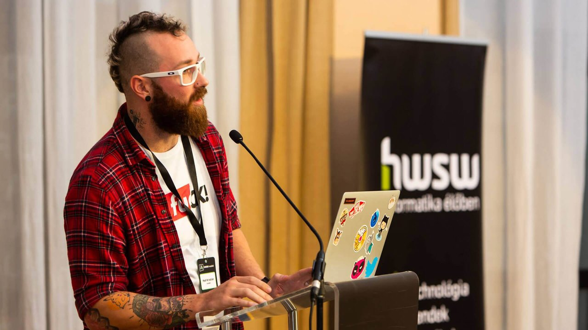

Glamorous Camsite
Senior UI/UX Designer @ Docler Holding — 2014
Well… this was part of my portfolio for few years when…
"Therefore, we demand that you immediately stop using our trademarks and stop displaying the designs created for Docler. You may continue mentioning LiveJasmin as a reference for your past work."
Legal Department of Docler Holding, 7th of October, 2020
So let's see a slightly censored version of it — let's just call it LiveCamsite.

Context
LiveCamsite is one of the first cam sites in the world and is still a market leader in the industry. Growth gets difficult once you hit the boundary between mainstream and "the things we don't talk about".
They wanted out of that box: a "soft", glamorous version of the platform, and more room for the models. The standalone Camsite.com was born. It's changed a lot since, and it's a separate product today, but I want to talk about the first step.
LiveCamsite had a reputation for quality, and kept pushing its models to shoot better content, do photoshoots, prettify their studios. So one of the hardest steps was already done before we started.
Research
The design started with market and user research. Our competition was Playboy and the mainstream soft-erotic magazines, with Victoria's Secret as a huge inspiration. The target was the US, so I went through the most searched and most viewed categories there. Thanks to Hollywood, it's still blue eyes, blonde, long legs…
Because the standard was so high, we handpicked every model for it. We only had a handful, and we couldn't guarantee they'd be online around the clock — so this was also the moment to change how people consumed the content. I introduced "offline" content: prerecorded videos, photo sets, even written posts. That's what let me sketch the user flow.
 A user flow, so development could start before the final UI design.
A user flow, so development could start before the final UI design.
Design
The main page was mostly visual — a sexy catalogue, sections, highlighted models with intros and posts, even handpicked videos. The different post types meant the models needed a fuller profile, with live shows reachable there too whenever they were on.
 The opening page presenting hand-picked vanilla content to the visitors.
The opening page presenting hand-picked vanilla content to the visitors.
Development ran waterfall, so the design had to be right the first time — every iteration happened before anything reached the developers. Teammates and management went through several user flows and layouts before we locked the final one. Unfortunately I had no chance to gather model or customer feedback — the whole process happened internally, and I had to lean on blunt statistics, analytics, and hunches.
I built HTML prototypes too, so the developers had the CSS/JS animations and visual elements in hand — fewer round trips that way.
 Variety of age consent modals to use.
Variety of age consent modals to use.
Outcome
Internal constraints and all, it went live for millions of visitors and ran live unchanged for 2 years. I had almost full creative freedom on it as lead designer, and it's still one of the projects I'm proudest of.
Takeaway
I'm grateful I got to work on something like this. And on the difficulties of user research in the adult industry, I gave a talk about exactly that at the HWSW Mobile Conference in Budapest in 2018.

Photo of me at the HWSW ConferenceThis was one of several projects I did for the adult industry. For more NSFW projects follow the link: NSFW Projects — 18+.